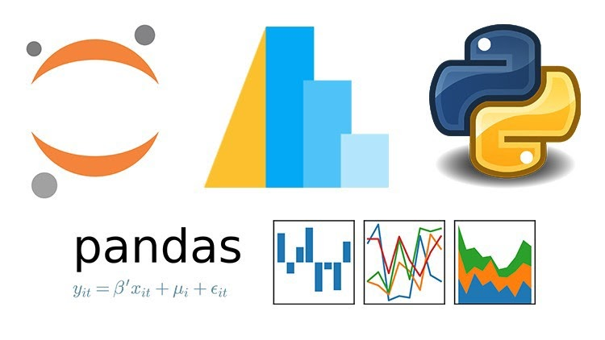

Welcome to my Blog!
Hello! Here, you'll find a mix of my own personal blog posts and a selection of interesting articles I've discovered. From thoughts on daily life to explorations of topics that catch my eye, this blog is a place for sharing stories and insights that matter.
Microsoft Experience
On February 19th, 2024, my data analytics class had the privilege of visiting the Microsoft offices in Dublin for a comprehensive Power BI workshop. Upon arrival, we were warmly welcomed with a variety of refreshments, setting a positive tone for the day ahead. The morning session consisted of an intensive three-hour Power BI tutorial, where we delved into the intricacies of data visualization and business intelligence tools. Expert instructors guided us through the complex functionalities of Power BI, enhancing our analytical skills and providing insights on effectively transforming raw data into actionable business insights.
Following a delightful lunch break, we were taken on a tour of the Microsoft facilities. This tour not only highlighted the innovative work environment at Microsoft but also allowed us to engage with professionals who shared their experiences and career advice. This visit was not only educational but also inspirational, offering us a glimpse into the practical applications of our coursework in a real-world setting.
Interesting Blog Articles:
Become a Pro at Pandas: Python's Data Manipulation Library
This article from Medium provides an in-depth look at using Pandas, a powerful Python library for data manipulation and analysis. Read more here.
How AI-Powered Creative Tools Innovate Art, Music, and More
Explore how artificial intelligence is revolutionizing creative fields with innovative tools, as discussed in this Thinkful blog. Read more here.
From Code to Customer: Google's AI-Enhanced Engagement Strategy
This Thinkful blog entry delves into Google's strategies for enhancing customer engagement through the use of AI technologies. Read more here.
Dataversity: Women in Data - meet Christina Sandema Sombe
This article highlights Christina's significant contributions to the field of data, detailing her innovative approaches and the impact of her work in advancing data science. A beacon for aspiring female data professionals, Christina's story is a testament to the pivotal role women play in shaping the future of technology and analytics.Read more here.
Gen Z: Statistics, Data and Trends (2024)
This blog on 'What's The Big Data?' provides detailed statistics and insights into Generation Z's behaviors, technological engagement, and cultural impact, catering to marketers, educators, and policymakers. Read more here.
What AI Means for the Future of Small Business Employment
This article on Datafloq explores the transformative impact of artificial intelligence on small business employment, discussing both the challenges and opportunities AI presents. It delves into how AI technologies are reshaping job roles, enhancing productivity, and necessitating new skills, thereby offering a roadmap for small businesses to adapt and thrive in the evolving digital landscape. Read more here.
How AI and Blockchain Converge for Next-Generation Solutions
Explore the cutting-edge convergence of AI and blockchain technologies in this Datafloq article, which examines how their integration is fostering next-generation solutions across various industries. The article highlights innovative use cases and discusses the synergistic effects of AI's analytical power and blockchain's secure, decentralized architecture, paving the way for revolutionary changes in data integrity, efficiency, and transparency.Read more here.